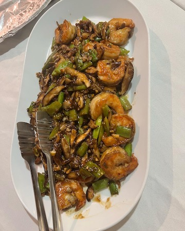

Recipes
On this page you'll find recipes I've tried! You'll see that I love
cooking and baking. I often use my air-fryer, stand-mixer, and
pressure cooker to experiment with. My partner is a diabetic so
we're always trying to find new and healthier ways to create
delicious food!
Salmon Wellington

-
I was inspired to make this recipe when a co-worker said she
had tried it and enjoyed it. I also enjoy anything with puff
pastry and butter.
-
This recipe was a little complicated but tasted alright in
the end. I think the puff pastry may have been too thin.
-
Well Plated
Shrimp Stir-fry

-
This recipe was delicious! But I had a lot of help from
other people at The Gathering Table.
-
We also prepared a really good Thai Chicken Soup. There was
a lot of waiting around while food cooked but otherwise the
experience was enjoyable.
-
The Gathering Table
Sugar Free Vanilla Cake

-
I made this cake for my partner's birthday. He likes golf so
I made it golf-themed.
-
This actually tasted pretty terrible and I wouldn't bake it
again.
- But it looked nice!
-
Birch Benders
Top